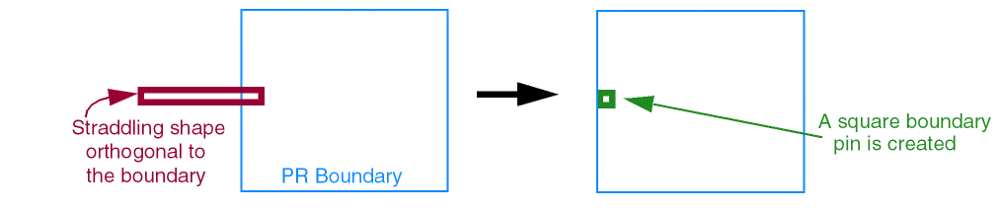
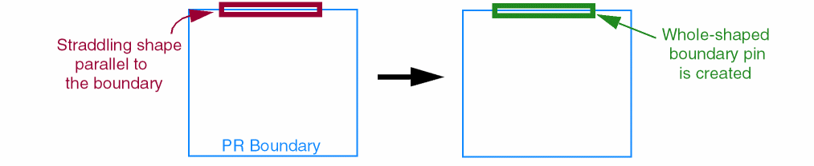
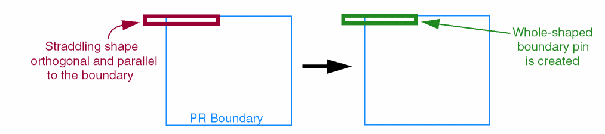
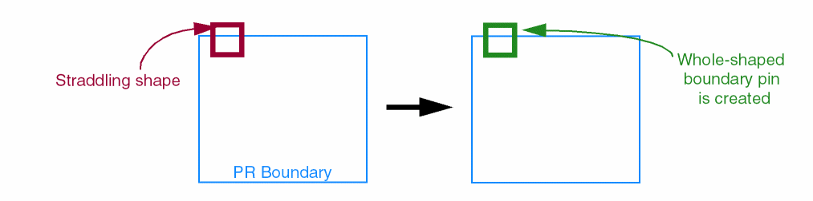
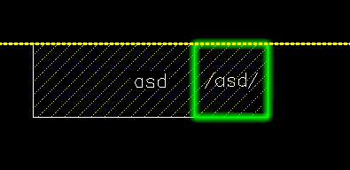

Pin Shapes Created for Straddling Shapes in Auto Create Pins Form
Straddling shapes are the shapes that overlap the PR boundary. They are neither entirely inside nor outside the PR boundary. The Auto-Create Pins command recognizes such shapes and creates corresponding boundary pins.
In case of power and ground straddling shapes, whole-shape boundary pins are created.
In case of signal shapes, the Boundary Signal Pin Size setting and the direction of the layer that contains the straddling shape determine the shape of the auto-created pin.
-
When Boundary Signal Pin Size is set to Auto and the layer of the straddling shape layer is orthogonal to the PR boundary, a square-shaped boundary pin is created.
 -
When Boundary Signal Pin Size is set to Auto and the layer of the straddling shape layer is parallel to the PR boundary, a whole-shape boundary pin (of the same dimensions as the source shape) is created.
 -
When Boundary Signal Pin Size is set to Auto and the layer of the straddling shape layer is both orthogonal and parallel to the PR boundary, a whole shape boundary pin is created.
 -
When Boundary Signal Pin Size is set to Whole Shape, a whole shape boundary pin is created. This is irrespective of whether the straddling shape layer is orthogonal or parallel to the PR boundary.

For boundary and buried shaped pins, you can use the following settings to specify the number of signal pins to be generated when multiple boundary shapes belong to the same net:
-
Single: Creates a single boundary pin on the highest metal layer. For example, if there are five boundary shapes on metal layers
0to4, then a single pin is created on metal4, which is the highest metal layer. When the autoPinPathSpineAware environment variable is set tot, the highest layer pin island, which consists of overlapping boundary pins belonging to the same layer and net, is promoted to the highest metal layer. A corresponding boundary pin is created in the highest metal layer. This feature supports creation of only whole shape pins. The following image shows a single boundary pin generated by the Auto-Create Pins tool.
 -
Multiple: Provides the following layer selection options:
- Top Layer: Creates multiple buried pins on the highest metal layer.
-
Use Layers: Lets you specify the layers on which buried pins are to be created. By default, all layers are selected. The same number of buried pins as the number of buried shapes are created on the same layers as the shapes. When the autoPinMultiplePathSpine environment variable is set to
t, a single merged pin is created for all the split path segments. This setting is applicable to both signal and power pins when the tool runs in Multiple mode.
Related Topics
Return to top